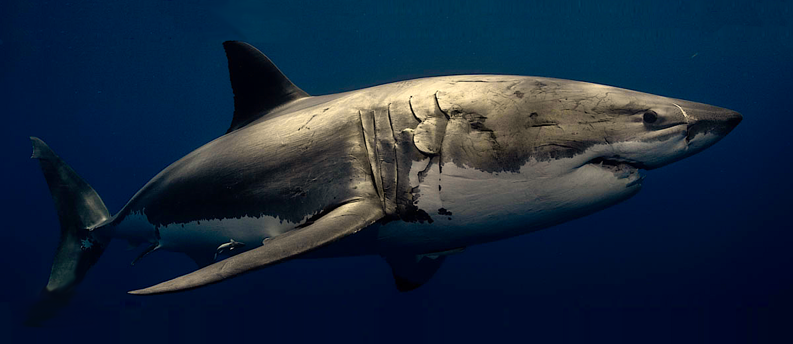
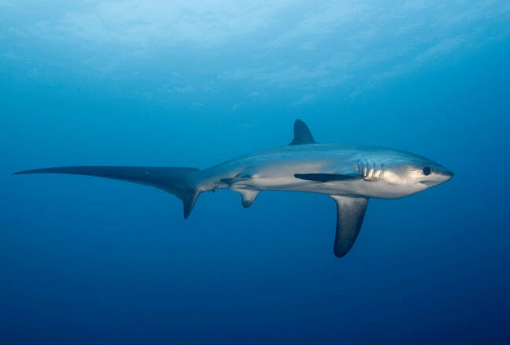
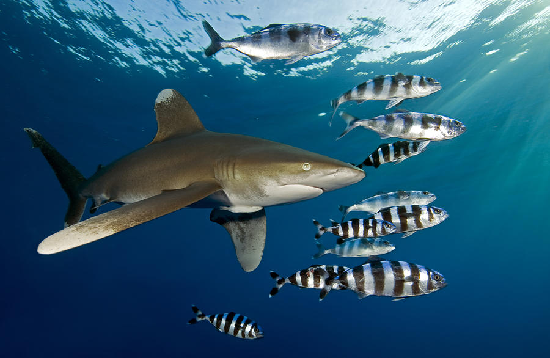
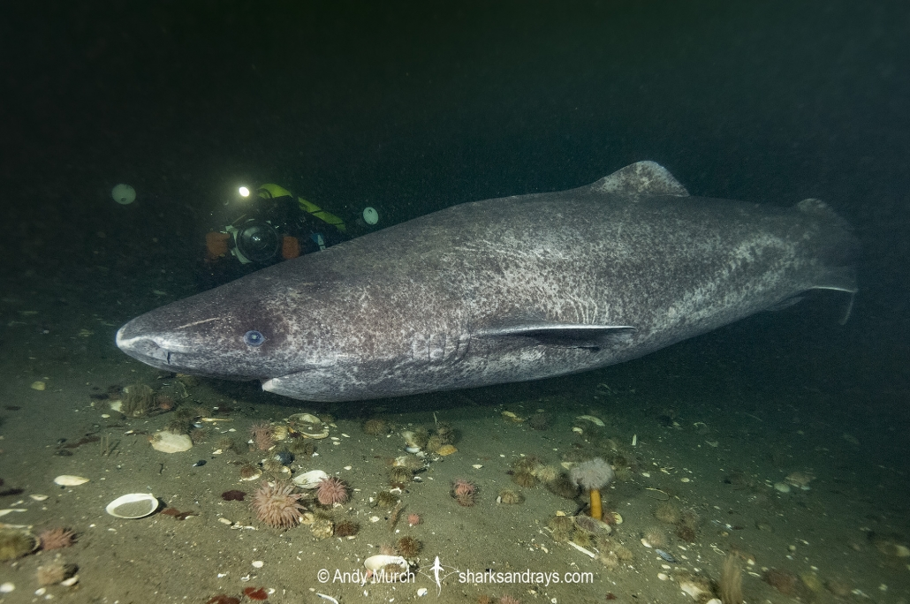
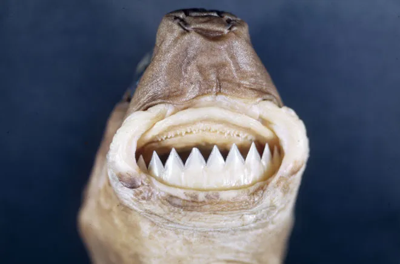

-
Great White Shark

- The biggest great white ever recorded is a female shark named Deep Blue, who is 20 feet long and 4,500 pounds
- Great white sharks give live birth
- Their only predators are orca whales and other sharks
-
Thresher Shark

- Threshers are known for their whiplike tail, which they use to stun their prey
- Their long tail and torpedo-shaped body help them fly through the water at 22 miles per hour (That's 7mph faster than a great white!)
- They are able to propel themselves up to 9 feet out of the water
-
Oceanic Whitetip Shark

- These sharks are known as the "shipwreck sharks" because they are notorious for opportunistically attacking sailors in shipwrecks
- They never stop moving. They must stay awake to swim day and night to keep a constant flow of water passing through their gills, pumping oxygen into their bodies
- They generally prefer the open ocean, so they are not likely to be found at the beach
-
Greenland Shark

- These sharks occupy the artic waters near Greenland, Iceland, Norway, and Canada
- Their meat is poisonous to humans
- The average lifespan of a greenland shark ranges from 252 to 512 years
-
Cookiecutter Shark

- These sharks only grow to be 18-20 inches long
- It is considered a parasite because it feeds by latching onto a larger animal's body and scoops out a mouth-sized chunk of flesh with their strong, triangular lower teeth
- There is only one confirmed case of a cookiecutter shark biting a person